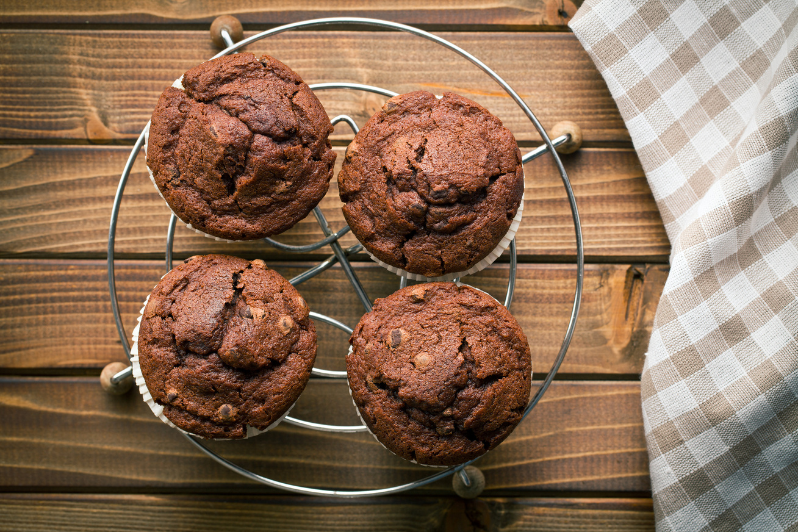

Nutellás csokis muffin
A nutellás muffin csokis tésztával egy kellemes finomság, kellemes krémes belsővel. Nagyon sokan biztos kellemes emlékekkel rendelkeznek arról a néhány napról, amikor ez a kellemes finomság fogadta őket otthon. Azonban a legtöbben nem is biztos, hogy nutellás muffint ettek, figyelembe véve, hogy a nutella egy mogyorókrém termék neve.
Ez is, mint sok más édesség, izléshez szabható. Ha a készítőnek kedve van némi gyümölcsös ízekhez, akkor kedvtől függően tehet bele mazsolától kezdve kandírozott narancs darabokat is. Ezeket természetesen ízlés szerinti arányban kell megvásárolni, és felhasználni.

Hozzávalók
- 10 dkg margarin (puha vagy vaj)
- 10 dkg cukor
- 1 csomag vaníliás cukor
- 2 db tojás
- 20 dkg finomliszt
- 0.5 csomag sütőpor
- 1.5 dl tej
- 1 púpozott ek cukrozatlan kakaópor
- 5 dkg étcsokoládé
- 12 teáskanál nutella
- 1 csipet só
Elkészítés
- A margarint robotgéppel habosra keverjük a cukorral és a vaníliás cukorral, majd egyenként hozzákeverjük a tojásokat.
- Elvegyítjük a lisztet a kakaóporral, a sütőporral, és a sóval, majd közepes fokozaton a tejjel felváltva hozzákeverjük a masszához.
- Az étcsokoládét feldaraboljuk, és azt is hozzákeverjük a masszához.
- A muffinformát papírral béleljük, eloszlatjuk bennük a masszát, és mindegyik tetejére egy teáskanál nutellát kanalazunk.
- Előmelegített sütőben kis lángon, kb. 20 perc alatt készre sütjük.